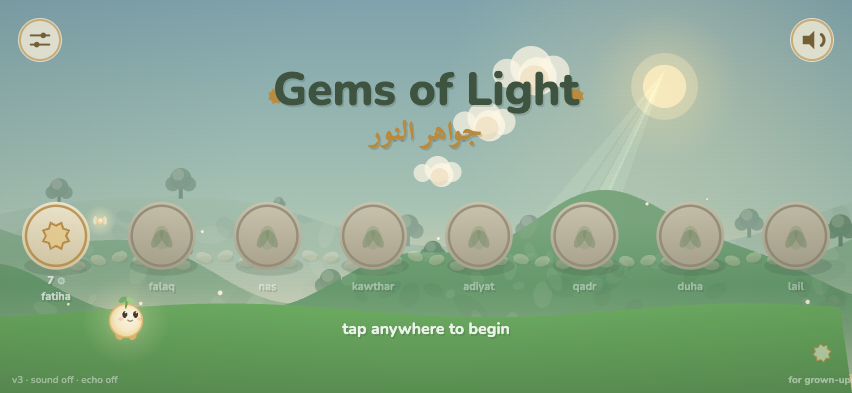
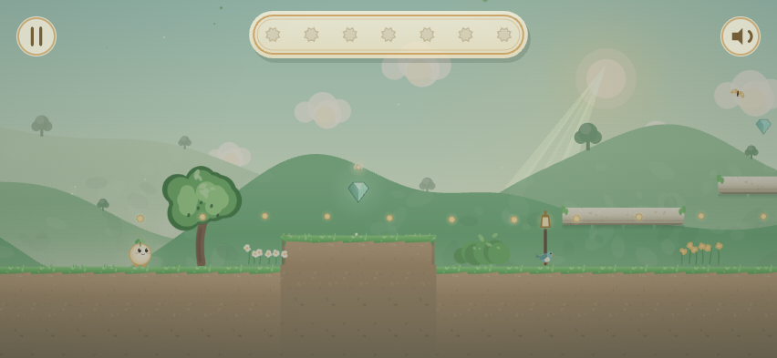
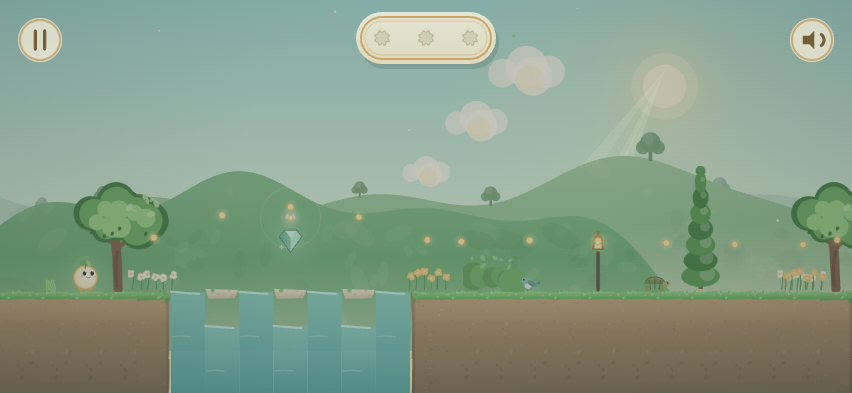
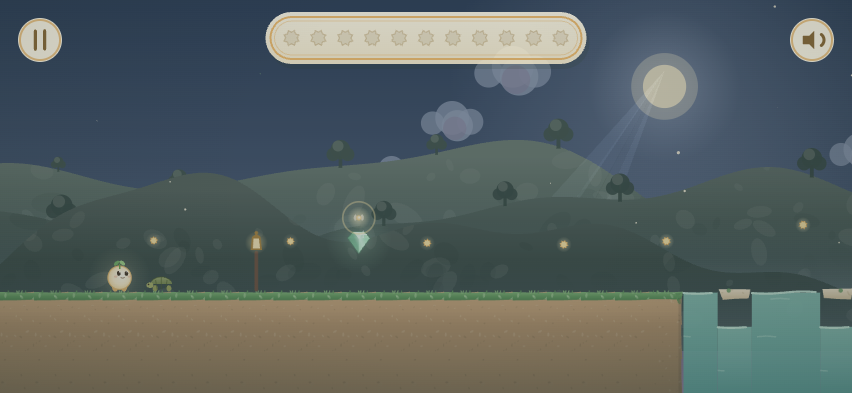
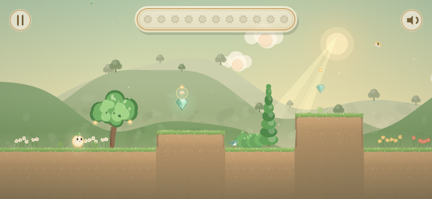
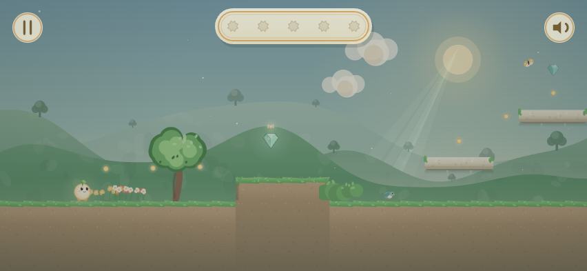

The hand-painted overworld for a gentle, wordless Quran-memorization game for children aged 5–8.
1What you are painting
Gems of Light is a gentle, wordless platformer. Each short surah is a side-scrolling garden world: the child collects glowing gems (each gem is an ayah, heard aloud when gathered), earns a campfire recitation, and sets a Grand Gem into a shrine. The game speaks entirely through animation, light, and environment — no instructional text, no score, nothing that punishes.
You are painting the map between those worlds: the place the child returns to after every session, where her whole journey is visible as one landscape — a continuous geography she travels point to point, as a warm storybook painting.
The painting is the stage. The game engine performs on top of it: an animated little light-child walks your path, flowers bloom where surahs are finished, a star breathes where the journey currently waits, water sparkles, petals drift, a pale daytime moon glows. You paint none of those living things (see §6). You paint the world they live in.
2The feeling (most important section)
Morning, always. Light-green, open, light-filled. The whole game lives in daylight — early gold morning through warm late afternoon. The one moon in this game is a pale daytime moon, resting in a bright sky — and the engine draws it.
Seen from above, gently. The map is viewed from the air at a soft tilt — a bird gliding over the garden, seeing the tops and fronts of things at once: the classic console-overworld camera. The ground plane is the picture. Sky is at most a thin bright band along the top edge, or absent entirely. This is the single most important difference between the map and the game's side-scrolling levels: the map never shares the levels' side-on viewpoint, never has a horizon across the middle, never strings its scenery along one ground line.
A found landscape. One continuous geography, asymmetric and alive: regions flow into each other the way a valley becomes an orchard becomes a hillside. The composition should feel discovered rather than arranged — like a real place a child could imagine walking into. The trail winds across the ground plane in every direction — curves, switchbacks, doubling back — never a line with scenery strung beside it.
The journey climbs toward the light. Progression runs from the map's lower-left toward its upper-right — rising terraces, a sense of ascent, the warmest light waiting highest. Depth, overlap, and elevation are strongly encouraged.
Gouache storybook. Flat-ish painterly shapes, soft edges, warm cream highlights — a children's picture book, not vector-corporate, not pixel art, not realism. The existing game is painted in code with this exact sensibility; your map should feel like the same hand.
Islamic garden vocabulary, worn lightly. The map's bones are the classical paradise garden: walled terraces, geometric flowerbeds, water channels, stepped water-stairs (chadars), cream stone, wooden gates, arches. Gardens, water, stone, and sky only — no figures, no faces, no text or lettering of any kind (including Arabic), no religious iconography. The geometry itself carries the heritage.
3The geography — three regions, one landscape
The map holds the journey's ~17 surahs in three regions, each a distinct, nameable place a five-year-old could point to (“the water one!”). They run from the map's lower-left to its upper-right, lowest to highest:
1 · The Garden Valley — where everything begins
Lowest ground, freshest morning gold. Its heart: a spring — the source of all the map's water — held in an eight-point-star stone pool.
2 · The Orchard Rise — a terrace up
Fuller afternoon green, laden fruit trees, dappled warmth. Its heart: a quatrefoil clearing (four-lobed stone-edged bed).
3 · The Courtyard Heights — highest, warm honeyed stone
Long-light, low walls, arches, paving. Its heart: an octagonal court.
Each region needs, in whatever composition you choose:
A heart — the geometric landmark above. Its shape is the region's identity, like a constellation's figure rendered in stone and grass.
A trail — the walking path, winding through the region past its surah-spots (anchors, §5). Curves, switchbacks and varied spacing welcome — never a straight line of evenly spaced dots.
Water — one continuous watercourse threads all three regions, rising from the valley spring and connecting region to region via stepped water-stairs (chadars) climbing each terrace, with a small wooden gate at each crest. The engine reveals or hides water per region, so keep each region's water on its own layer (§5).
Its palette family (§4) — regions read as different places partly because the light itself shifts across the map.
The open edge: the upper-right of the map must not conclude. The trail exits the Courtyard Heights at a definite point on that edge, terrain continuing implied beyond the frame — the journey will someday grow, and a future panel will be painted to join at this seam. No closing wall, no final peak, no framing vignette on the upper-right.
4Color
These are the game's own palettes (it is literally painted from these values). You have artistic freedom within each family; these anchor the temperature of each region.
Region 1 — Garden Valley (fullest morning):
sky #9ED2C6 → #DFF0C8 → #FBE7AE ·
hills #BCD8B2#93C08D#6FAD72 ·
grass #7CBF6B (light #ACDE90, dark #5B9C52) ·
soil #C4A981 ·
stone #EAE0C6#CBBC97 ·
water #BFE8DC#8FCFC2#57A79E ·
gold #F4CD7E ·
mist #F4EFD8
Region 2 — Orchard Rise (afternoon, fruit on the bough):
sky #A3CBAB → #DCE8B4 → #F8DCA2 ·
hills #B5CFA0#8CB47F#699F63 ·
grass #7CB863 (light #A4D384) ·
leaf #6FAA58#98CB77#4E8746 ·
trunk #8A6B4F ·
gold #F2C46E
Region 3 — Courtyard Heights (late afternoon, warm stone):
sky #B3C9A9 → #E7DFAE → #F6CE92 ·
stone #F0E0BE#D2BC90#B29768 ·
grass #8CB061 (light #B0CC80) ·
water #C4E4D2#8FC9B8 ·
gold #F3C572#DCA346
Accents used by the living layer (avoid competing with them):
Grand-Gem gold #F0C878#FFE9A8#FFF6DC,
bloom pink #F5B8C4,
warm cream #FDF6E4,
deep ink-green #3E5340.
Transitions between regions should be gradual — the sky and ground drift from one family to the next across the seam, never a hard border.
5Technical requirements
Format: SVG (1.1), a single file, one continuous artwork.
Canvas: a landscape rectangle around 2:1 — e.g. a viewBox of 1800 × 860. The game's camera is a phone-screen window (852×393 landscape is the reference screen) that pans across the artwork in both directions, following the child — roughly two screens of explorable ground each way, traveled lower-left to upper-right. The whole canvas is ground (plus at most a thin sky band at the very top); keep important detail out of the outer ~3% of every edge.
Scale sanity: the artwork displays near 1:1 on the phone at an 1800-unit-wide viewBox. The walking character is ~55 units tall; trail width, gates and steps should feel sized for her.
Named anchors — the contract that makes the map programmable. Include these elements with exact ids. Anchor circles may be invisible (opacity="0" is fine) but must survive export as <circle> elements with real cx/cy — do not flatten or rasterize them away.
id
element
meaning
walk
one <path>
the full walking route, lower-left → upper-right, threading all three regions in journey order
stream
one <path>
the watercourse's spine, spring → upper-right (the ceremony's light travels along it, including up the water-stairs)
spot-R-N
<circle>
surah positions: spot-1-1…spot-1-7, spot-2-1…spot-2-7, spot-3-1…spot-3-7 — seven per region (we bind 5–6 now; spares are invisible until the journey grows). Place them on or near the walk path, at least 90 units apart, in walking order
heart-1/2/3
<circle>
center of each region's geometric heart
gate-1/2
<circle>
the wooden gate at each water-stair crest
moon
<circle>
where the daytime moon will hang, in open sky above the valley's heart
water-1/2/3
<g> group
each region's painted water (channel fill, pool fill, stair-water), grouped per region so the engine can hide water in regions the journey hasn't reached. Paint the beds and stonework outside these groups — dry channels remain visible
over
<g> group
anything the walking character should pass behind — bridge rails, arch fronts, a tree canopy overhanging the path. Everything else renders behind her
Export constraints:
Preserve ids (Illustrator: Object IDs = layer names; Figma: “include id attribute”; Affinity: set element names, export SVG with names as ids).
No <text> elements anywhere.
No embedded raster images; no external references (fonts, links).
Flat fills and simple gradients only — no filters (blur, shadow effects), no masks if avoidable. The game rasterizes the SVG once on a phone; filters render slowly and inconsistently.
Keep it lean: ideally under ~1.5 MB of SVG.
6What the engine draws — do NOT paint these
The character (an animated glowing light-child) and her firefly guide
Flowers, blooms, buds and stars at the surah spots (paint the ground they grow from; leave the spots themselves clear)
Gems and Grand Gems
The moon itself (just leave sky at the moon anchor)
Gate doors (paint the open gateway or arch; the engine draws and animates the closed wooden doors on top)
Water sparkles, ripples, traveling light, petals, celebration effects
Any dimming of “not yet reached” regions (the engine washes those; paint the whole map fully awake and alive)
7Process
Rough pass first: a loose composition sketch (even pencil/photo) for sign-off on geography, path flow, region character, and the open edge — before any rendering.
Final SVG with anchors per §5.
We wire it into the live game within a day and review on an iPhone in landscape — the only screen that matters.
8Reference — the game today
Screenshots of the live game: the palette and gouache sensibility in motion, and the best guide to what the map should feel like it belongs to. (For structure — never style — classic console overworld maps such as Super Mario World's are a useful touchstone: one continuous geography the player travels dot to dot.)

The title screen today — the little light-child, the morning meadow, and the placeholder journey row of discs that your painted map will replace.

The Garden Gate (Al-Fatiha) — the game's fullest morning: radiant light, the gem band above, sleeping gems along the path.

The Spring (Al-Kawthar) — fresh mint light and water; the watercourse vocabulary the map's stream should feel related to.

The Morning Brightness (Ad-Duha) — warm gold over green, lanterns and soft haze.

The Chargers (Al-Adiyat) — earthier warmth; the game's palette range stays gentle even at its most adventurous.

The Daybreak (Al-Falaq) — dawn drifting toward gold across the level; the softest end of the game's light.